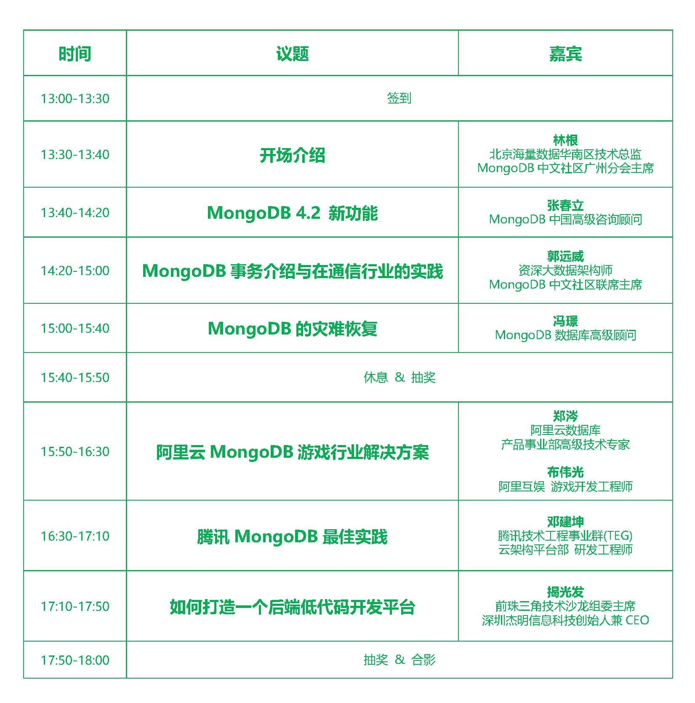
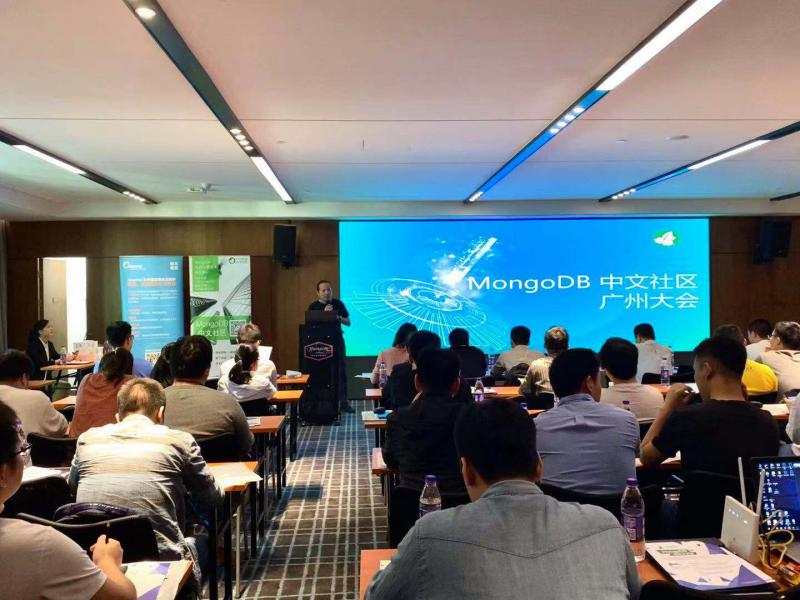
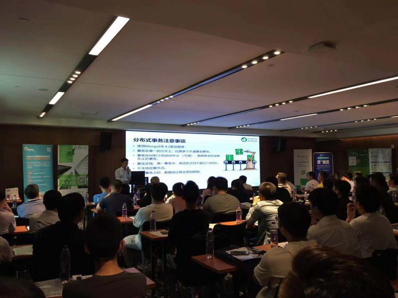
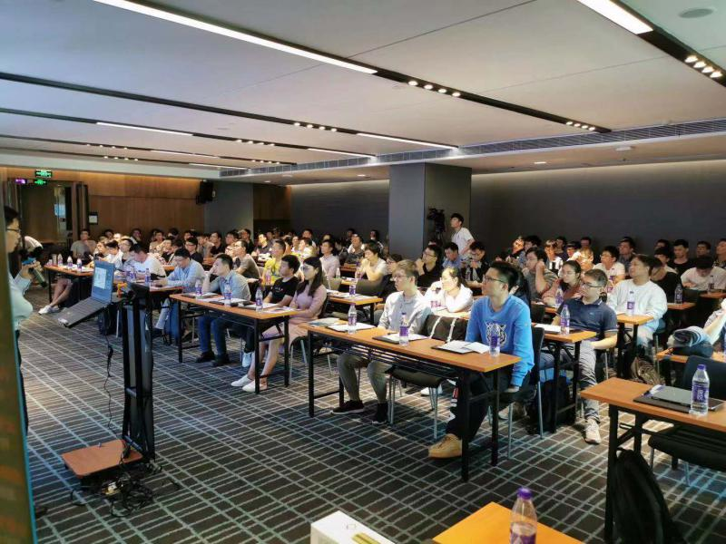
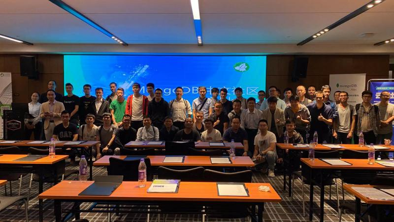

MongoDB中文社区(mongoing.com)是大中华区获得官方认可的中文社区，11月23日下午，在广州举办了线下用户大会，带给大家一手干货和实践。
大会组织者对时间的把控做得非常好，没有拖沓，基本是按时既定流程走的。具体流程如下：

详细介绍了MongoDB 4.2新版本带来的新特性，不得不说，这个版本的更新实在让人惊艳，新特性很多很强大。更新速度快，满足了越来越多的需求而不影响其性能，我想这也是MongoDB能快速发展的主要原因吧。
（1）分布式事务
关系型数据库的事务能力很强这是众所周知的，但因为数据库模型的差异，在NoSQL上的事务是难以实现的。大多数人还是认为，NoSQL是没有事务能力的。但MongoDB一步步的努力，改变了这一现状。从单文档事务，到副本级多文档事务，到现在分片级的分布式多文档事务，终于让不选择MongoDB的理由又少了一条。
可变更的分片键值，可以通过update来改变，而不用先delete再insert了。
（2）查询及分析
按需要的物化视图，通过$merge实现。通过物化视图能加快访问速度，而且还能在视图中建立索引等。
其它更新：通配符索引、Atlas数据湖、MongoDB的图表、与Kafka的集成等。
（3）弹性和伸缩性
可重试读写、Stepdown的10倍提高，Zstandard的压缩。
（4）安全性
客户端字段级的加密，使存在数据库中的数据是加密的。
支持无停机的多个CA。
（5）随处运行
Atlas的自动扩展、全文搜索服务、与Kubernetes的集成。
从WiredTiger到源码，介绍了MongoDB事务的实现与快照隔离，可见大神都是深入到源码的，毕竟只有源码是不会骗人的。
介绍了在极端情况下的灾难恢复工具：WiredTiger的命令行工具。需要通过源码构建编译它的命令行环境，并通过命令行分析文件、获得dump文件、加载文件。要注意要与数据库所使用的WT版本对应。
介绍了多种备份方式的比较，以及如何选择正确的备份方式及时机。对比了逻辑备份、物理备份和快照备份的差异，相比之下，物理备份和快照是更快更安全的备份。
还介绍了MongodB在阿里游戏的应用，使用简单，但就是能带来开发上的便携和数据上的安全，这就是MongoDB的优势。
介绍了腾讯云的CMongo在单分片大翻页情境下的优化，将mongos的skip/limit下沉到mongod来做，以实现更优的查询性能。




本次分享活动的干货很多，也见识了大神的厉害，而且大神们都是非常务实且低调的，让人信服。向大神们学习！
欢迎关注公众号<南瓜慢说>，将持续为你更新...
多读书，多分享；多写作，多整理。